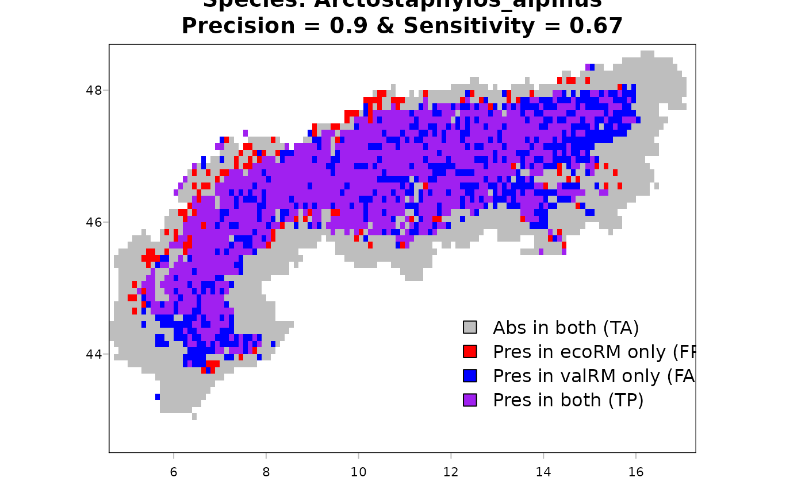
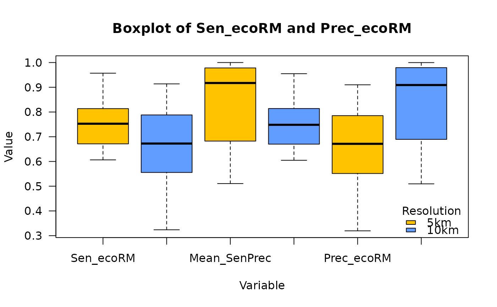

Evaluate Range Maps Against Independent Validation Data
Source:R/evaluate_range.R
evaluate_range.RdCompare range maps produced by get_range() with external validation
data, such as species distribution models (SDMs) or expert-derived range
maps, and summarize precision, sensitivity, specificity, and TSS.
Usage
evaluate_range(
root_dir = NULL,
valData_dir = NULL,
ecoRM_dir = NULL,
valData_type = NULL,
verbose = TRUE,
print_map = TRUE,
mask = NULL,
res_fact = NULL
)Arguments
- root_dir
Character. String giving the root directory that contains both the generated range maps and the validation data.
- valData_dir
Character. String giving the directory, relative to
root_dir, containing the validation data.- ecoRM_dir
Character. String giving the directory, relative to
root_dir, containing range maps generated withget_range().- valData_type
Character. String indicating the expected validation-data format:
"SHP"or"TIFF".- verbose
Logical. Should progress information be printed while the comparison is running?
- print_map
Logical. If
TRUE, write a PDF overlay map for each evaluated species.- mask
Optional
SpatRaster. Used as a study-area mask and common comparison domain.- res_fact
Optional integer. Aggregation factor used to coarsen the native resolution before comparison.
Value
A list with two elements: df_eval, a data frame containing
per-species evaluation statistics, and overlay_list, a list of raster
overlays used for plotting and inspection.
Details
TIFF validation files must have file names matching the species
names of the range maps. Shapefile-based validation data must include a
column named sci_name with matching species names.
The function can optionally mask the focal study region and aggregate maps to coarser resolutions before calculating evaluation metrics, which is useful when comparing products with different native resolutions.
References
Pinkert, S., Sica, Y. V., Winner, K., & Jetz, W. (2023). The potential of ecoregional range maps for boosting taxonomic coverage in ecology and conservation. Ecography, 12, e06794. doi:10.1111/ecog.06794
Examples
###########################################
### Example plot
###########################################
## EcoRM evaluation at different resolutions (<10sec runtime)
root.dir <- list.files(
system.file(package = "gbif.range"),
pattern = "extdata",
full.names = TRUE
)
res5km <- evaluate_range(
root_dir = root.dir,
valData_dir = "SDM",
ecoRM_dir = "EcoRM",
verbose = TRUE,
print_map = FALSE,
valData_type = "TIFF",
mask = NULL,
res_fact = NULL
)
#> -Note-
#> 100.00% (12) of the species names of ecoregions match with names of the validation data files
#> ------
#> 1 Species: Arctostaphylos_alpinus
#> 2 Species: Atropa_bella-donna
#> 3 Species: Centaurea_montana
#> 4 Species: Cirsium_rivulare
#> 5 Species: Cupressus_sempervirens
#> 6 Species: Panthera_tigris
#> 7 Species: Pinus_nigra
#> 8 Species: Plantago_alpina
#> 9 Species: Plantago_media
#> 10 Species: Prunella_vulgaris
#> 11 Species: Salvia_pratensis
#> 12 Species: Tragopogon_dubius
#> Cross-species mean Prec & Sensitivity: 0.75
res10km <- evaluate_range(
root_dir = root.dir,
valData_dir = "SDM",
ecoRM_dir = "EcoRM",
verbose = TRUE,
print_map = FALSE,
valData_type = "TIFF",
mask = NULL,
res_fact = 2
)
#> -Note-
#> 100.00% (12) of the species names of ecoregions match with names of the validation data files
#> ------
#> 1 Species: Arctostaphylos_alpinus
#> 2 Species: Atropa_bella-donna
#> 3 Species: Centaurea_montana
#> 4 Species: Cirsium_rivulare
#> 5 Species: Cupressus_sempervirens
#> 6 Species: Panthera_tigris
#> 7 Species: Pinus_nigra
#> 8 Species: Plantago_alpina
#> 9 Species: Plantago_media
#> 10 Species: Prunella_vulgaris
#> 11 Species: Salvia_pratensis
#> 12 Species: Tragopogon_dubius
#> Cross-species mean Prec & Sensitivity: 0.75
## Extract and plot a specific overlay map
terra::plot(
res10km$overlay_list[[1]],
col = c("gray", "red", "blue", "purple"),
breaks = c(-0.5, 0.5, 1.5, 2.5, 3.5),
legend = FALSE,
main = paste0("Species: ",
res10km$df_eval[1, 1],"\n",
"Precision = ",
round(res10km$df_eval[1, "Prec_ecoRM"], digits = 2)," & ",
"Sensitivity = ",
round(res10km$df_eval[1, "Sen_ecoRM"], digits = 2)),
las = 1
)
graphics::legend(
"bottomright",
legend = c(
"Abs in both (TA)",
"Pres in ecoRM only (FP)",
"Pres in valRM only (FA)",
"Pres in both (TP)"
),
fill = c("gray", "red", "blue", "purple"),
bg = NA,
box.col = NA,
inset = c(0,0.2)
)

## Compare sensitivity and precision outputs ##
# Calculate overall performance (e.g. mean sensitivity & precision)
res5km$df_eval$Mean_SenPrec <-
(res5km$df_eval$Sen_ecoRM + res5km$df_eval$Prec_ecoRM) / 2
res10km$df_eval$Mean_SenPrec <-
(res10km$df_eval$Sen_ecoRM + res10km$df_eval$Prec_ecoRM) / 2
# Combine the data frames and add a Resolution column
combined.df <- rbind(
cbind(res5km$df_eval, Resolution = "5km"),
cbind(res10km$df_eval, Resolution = "10km")
)
# Convert to long format
variables <- c("Sen_ecoRM", "Prec_ecoRM", "Mean_SenPrec")
long_df <- data.frame(
Variable = rep(variables, each = nrow(combined.df)),
Value = unlist(combined.df[variables]),
Resolution = rep(combined.df$Resolution, times = length(variables))
)
# Plot boxplots using base R
graphics::boxplot(
Value ~ Variable + Resolution,
data = long_df,
col = c("#FFC300", "#619CFF"),
names = rep(variables, 2),
xlab = "Variable",
ylab = "Value",
las = 1,
main = "Boxplot of Sen_ecoRM and Prec_ecoRM"
)
# Adding legend for colors
graphics::legend(
"bottomright",
legend = c("5km", "10km"),
fill = c("#FFC300", "#619CFF"),
title = "Resolution",
bty = "n"
)

# \donttest{
###########################################
### Package manuscript plot (Fig 2c-d)
###########################################
# Root and package
root_dir <- tempdir()
if (!dir.exists(file.path(root_dir, "fig_plots"))) {
dir.create(file.path(root_dir, "fig_plots"))
}
# -------------------------------------
# Plant
# -------------------------------------
# Preliminary
shp.lonlat <- terra::vect(
paste0(system.file(package = "gbif.range"),"/extdata/shp_lonlat.shp")
)
obs.arcto <- get_gbif(
"Arctostaphylos alpinus",
geo = shp.lonlat,
grain = 1
)
#> |--------------------------------------------|
#> | Total number (all records) : 42972 |
#> | Kept records : 6340 |
#> |--------------------------------------------|
#> | Kept records according to parameters:
#> | spatial_issue = FALSE, has_xy = TRUE by default ('geo' was set)
#>
#> ...GBIF records of Arctostaphylos alpinus: download starting...
#>
------------- #1 (100%..)
#>
#> ...Records (XY) filtering summary:
#> -----------------------------------------------
#> step removed remaining
#> Grain filtering 4968 1372
#> Duplicated records 448 924
#> Absence records 0 924
#> Basis selection 87 837
#> Establishment selection 0 837
#> Time frame 0 837
#> Identical records 0 837
#> Raster centroids 0 837
#>
#> Initial records : 6340
#> Total removed : 5503
#> Final records (XY) : 837
#> -----------------------------------------------
#> Final records (no XY) : 0
rst <- terra::rast(
paste0(system.file(package = "gbif.range"),"/extdata/rst.tif")
)
my.eco <- make_ecoreg(rst, 200)
#> CLARA algorithm processing...
#> Generating polygons...
range.arcto <- get_range(
occ_coord = obs.arcto,
ecoreg = my.eco,
ecoreg_name = "EcoRegion",
res = 0.05
)
#> ## Start of computation for species: Arctostaphylos alpinus ###
#> 0 outlier's from 807 | proportion from total points: 0%
#> ecoregion 1 of 86 : 100
#> ecoregion 2 of 86 : 101
#> ecoregion 3 of 86 : 102
#> ecoregion 4 of 86 : 103
#> ecoregion 5 of 86 : 104
#> ecoregion 6 of 86 : 105
#> ecoregion 7 of 86 : 106
#> ecoregion 8 of 86 : 107
#> ecoregion 9 of 86 : 108
#> ecoregion 10 of 86 : 109
#> ecoregion 11 of 86 : 110
#> ecoregion 12 of 86 : 111
#> ecoregion 13 of 86 : 112
#> ecoregion 14 of 86 : 113
#> ecoregion 15 of 86 : 114
#> ecoregion 16 of 86 : 115
#> ecoregion 17 of 86 : 116
#> ecoregion 18 of 86 : 117
#> ecoregion 19 of 86 : 118
#> ecoregion 20 of 86 : 119
#> ecoregion 21 of 86 : 120
#> ecoregion 22 of 86 : 121
#> ecoregion 23 of 86 : 122
#> ecoregion 24 of 86 : 123
#> ecoregion 25 of 86 : 124
#> ecoregion 26 of 86 : 126
#> ecoregion 27 of 86 : 127
#> ecoregion 28 of 86 : 128
#> ecoregion 29 of 86 : 129
#> ecoregion 30 of 86 : 130
#> ecoregion 31 of 86 : 131
#> ecoregion 32 of 86 : 133
#> ecoregion 33 of 86 : 134
#> ecoregion 34 of 86 : 136
#> ecoregion 35 of 86 : 137
#> ecoregion 36 of 86 : 138
#> ecoregion 37 of 86 : 141
#> ecoregion 38 of 86 : 142
#> ecoregion 39 of 86 : 143
#> ecoregion 40 of 86 : 144
#> ecoregion 41 of 86 : 147
#> ecoregion 42 of 86 : 148
#> ecoregion 43 of 86 : 151
#> ecoregion 44 of 86 : 189
#> ecoregion 45 of 86 : 21
#> ecoregion 46 of 86 : 22
#> ecoregion 47 of 86 : 23
#> ecoregion 48 of 86 : 25
#> ecoregion 49 of 86 : 28
#> ecoregion 50 of 86 : 32
#> ecoregion 51 of 86 : 33
#> ecoregion 52 of 86 : 36
#> ecoregion 53 of 86 : 37
#> ecoregion 54 of 86 : 39
#> ecoregion 55 of 86 : 49
#> ecoregion 56 of 86 : 52
#> ecoregion 57 of 86 : 54
#> ecoregion 58 of 86 : 55
#> ecoregion 59 of 86 : 57
#> ecoregion 60 of 86 : 58
#> ecoregion 61 of 86 : 65
#> ecoregion 62 of 86 : 66
#> ecoregion 63 of 86 : 7
#> ecoregion 64 of 86 : 70
#> ecoregion 65 of 86 : 71
#> ecoregion 66 of 86 : 72
#> ecoregion 67 of 86 : 73
#> ecoregion 68 of 86 : 74
#> ecoregion 69 of 86 : 76
#> ecoregion 70 of 86 : 79
#> ecoregion 71 of 86 : 83
#> ecoregion 72 of 86 : 84
#> ecoregion 73 of 86 : 85
#> ecoregion 74 of 86 : 87
#> ecoregion 75 of 86 : 88
#> ecoregion 76 of 86 : 89
#> ecoregion 77 of 86 : 90
#> ecoregion 78 of 86 : 91
#> ecoregion 79 of 86 : 92
#> ecoregion 80 of 86 : 93
#> ecoregion 81 of 86 : 94
#> ecoregion 82 of 86 : 95
#> ecoregion 83 of 86 : 96
#> ecoregion 84 of 86 : 97
#> ecoregion 85 of 86 : 98
#> ecoregion 86 of 86 : 99
#> ## End of computation for species: Arctostaphylos alpinus ###
ext.temp <- terra::ext(range.arcto$rangeOutput)
ext.temp <- c(ext.temp[1]-0.6, ext.temp[2]+0.05,
ext.temp[3]-0.05, ext.temp[4]+0.05)
spdf.world <- terra::vect(
system.file("extdata", "world_countries.shp", package = "gbif.range")
)
world.local <- terra::crop(spdf.world,ext.temp)
world.local.ar <- terra::aggregate(world.local)
r.arcto <- terra::mask(range.arcto$rangeOutput, world.local.ar)
# Plot plant
grDevices::png(
paste0(
root_dir,
"/fig_plots/fig2_arcto_ind.png"
),
width = 100,
height = 70,
unit = "cm",
res = 100,
pointsize = 110
)
oldpar <- graphics::par(mfrow = c(1,1), mar = c(5,5,5,20), lwd = 1, cex = 0.5)
terra::plot(world.local.ar, col = "#dce8dc", axes = FALSE, lwd = 2)
terra::plot(
terra::as.polygons(
r.arcto
),
lwd = 0.1,
col = "#63636350",
add = TRUE
)
terra::plot(
res5km$overlay_list[[1]],
col = c("#d1c845", "#e39c59", "#8d60cc", "#6cba6c"),
breaks = c(-0.5, 0.5, 1.5, 2.5, 3.5),
axes=FALSE,
legend = FALSE,
las = 1,
add = TRUE
)
graphics::text(
6.6,43.2,
paste("Mean TSS =", round(res5km$df_eval[1,"TSS_ecoRM"],2)),
cex = 1.5,
font = 2
)
graphics::text(
7.2,42.8,
paste("Mean Precision =", round(res5km$df_eval[1,"Prec_ecoRM"],2)),
cex = 1.5,
font = 2
)
terra::plot(
world.local.ar,
border = "#383d38",
axes = FALSE,
lwd = 2,
add = TRUE
)
grDevices::dev.off()
#> agg_record_1deb30eb4df9
#> 2
graphics::par(oldpar)
# -------------------------------------
# Tiger
# -------------------------------------
# Preliminary
obs.pt <- get_gbif(sp_name = "Panthera tigris")
#> |--------------------------------------------|
#> | Total number (all records) : 8007 |
#> | Kept records : 5457 |
#> |--------------------------------------------|
#> | Kept records according to parameters:
#> | spatial_issue = FALSE, has_xy = TRUE
#>
#> ...GBIF records of Panthera tigris: download starting...
#>
------------- #1 (100%..)
#>
#> ...Records (XY) filtering summary:
#> -----------------------------------------------
#> step removed remaining
#> Grain filtering 117 5340
#> Duplicated records 2587 2753
#> Absence records 0 2753
#> Basis selection 82 2671
#> Establishment selection 0 2671
#> Time frame 0 2671
#> Identical records 0 2671
#> Raster centroids 0 2671
#>
#> Initial records : 5457
#> Total removed : 2786
#> Final records (XY) : 2671
#> -----------------------------------------------
#> Final records (no XY) : 0
eco.terra <- read_ecoreg(
ecoreg_name = "eco_terra",
save_dir = tempdir()
)
range.tiger <- get_range(
occ_coord = obs.pt,
ecoreg = eco.terra,
ecoreg_name = "ECO_NAME"
)
#> ## Start of computation for species: Panthera tigris ###
#> 27 outlier's from 2666 | proportion from total points: 1%
#> ecoregion 1 of 44 : Amur Meadow Steppe
#> ecoregion 2 of 44 : Brahmaputra Valley Semi-Evergreen Forests
#> ecoregion 3 of 44 : Central Deccan Plateau Dry Deciduous Forests
#> ecoregion 4 of 44 : Central Indochina Dry Forests
#> ecoregion 5 of 44 : Chao Phraya Freshwater Swamp Forests
#> ecoregion 6 of 44 : Chhota-Nagpur Dry Deciduous Forests
#> ecoregion 7 of 44 : Deccan Thorn Scrub Forests
#> ecoregion 8 of 44 : Eastern Highlands Moist Deciduous Forests
#> ecoregion 9 of 44 : Eastern Himalayan Alpine Shrub And Meadows
#> ecoregion 10 of 44 : Eastern Himalayan Broadleaf Forests
#> ecoregion 11 of 44 : Eastern Himalayan Subalpine Conifer Forests
#> ecoregion 12 of 44 : Eastern Java-Bali Rain Forests
#> ecoregion 13 of 44 : Himalayan Subtropical Broadleaf Forests
#> ecoregion 14 of 44 : Himalayan Subtropical Pine Forests
#> ecoregion 15 of 44 : Kayah-Karen Montane Rain Forests
#> ecoregion 16 of 44 : Khathiar-Gir Dry Deciduous Forests
#> ecoregion 17 of 44 : Lower Gangetic Plains Moist Deciduous Forests
#> ecoregion 18 of 44 : Luang Prabang Montane Rain Forests
#> ecoregion 19 of 44 : Manchurian Mixed Forests
#> ecoregion 20 of 44 : Meghalaya Subtropical Forests
#> ecoregion 21 of 44 : Mizoram-Manipur-Kachin Rain Forests
#> ecoregion 22 of 44 : Narmada Valley Dry Deciduous Forests
#> ecoregion 23 of 44 : North Western Ghats Moist Deciduous Forests
#> ecoregion 24 of 44 : North Western Ghats Montane Rain Forests
#> ecoregion 25 of 44 : Northwestern Thorn Scrub Forests
#> ecoregion 26 of 44 : Okhotsk-Manchurian Taiga
#> ecoregion 27 of 44 : Orissa Semi-Evergreen Forests
#> ecoregion 28 of 44 : Peninsular Malaysian Montane Rain Forests
#> ecoregion 29 of 44 : Peninsular Malaysian Rain Forests
#> ecoregion 30 of 44 : South Deccan Plateau Dry Deciduous Forests
#> ecoregion 31 of 44 : South Western Ghats Moist Deciduous Forests
#> ecoregion 32 of 44 : South Western Ghats Montane Rain Forests
#> ecoregion 33 of 44 : Southeastern Indochina Dry Evergreen Forests
#> ecoregion 34 of 44 : Suiphun-Khanka Meadows And Forest Meadows
#> ecoregion 35 of 44 : Sumatran Freshwater Swamp Forests
#> ecoregion 36 of 44 : Sumatran Lowland Rain Forests
#> ecoregion 37 of 44 : Sumatran Montane Rain Forests
#> ecoregion 38 of 44 : Sumatran Peat Swamp Forests
#> ecoregion 39 of 44 : Sunda Shelf Mangroves
#> ecoregion 40 of 44 : Sundarbans Mangroves
#> ecoregion 41 of 44 : Tenasserim-South Thailand Semi-Evergreen Rain Forests
#> ecoregion 42 of 44 : Terai-Duar Savanna And Grasslands
#> ecoregion 43 of 44 : Upper Gangetic Plains Moist Deciduous Forests
#> ecoregion 44 of 44 : Ussuri Broadleaf And Mixed Forests
#> ## End of computation for species: Panthera tigris ###
ext.temp <- terra::ext(range.tiger$rangeOutput)
ext.temp <- c(ext.temp[1]-0.2, ext.temp[2]+0.2,
ext.temp[3]-0.2, ext.temp[4]+0.2)
world.local <- terra::crop(spdf.world, ext.temp)
world.local.ti <- terra::aggregate(world.local)
# Plot tiger
grDevices::png(
paste0(
root_dir,
"/fig_plots/fig2_tiger_ind.png"
),
width = 100,
height = 70,
unit = "cm",
res = 100,
pointsize = 110
)
oldpar <- graphics::par(mfrow = c(1,1), mar = c(5,5,5,20), lwd = 1, cex = 0.5)
terra::plot(world.local.ti, col = "#dce8dc", axes = FALSE, lwd = 2)
toPlot = terra::mask(res5km$overlay_list[[6]], world.local.ti)
terra::plot(
toPlot,
col = c("#d1c845", "#e39c59", "#8d60cc", "#6cba6c"),
breaks = c(-0.5, 0.5, 1.5, 2.5, 3.5),
axes = FALSE,
legend = FALSE,
las = 1,
add = TRUE
)
graphics::text(
86,49,
paste("Mean TSS =",round(res5km$df_eval[6,"TSS_ecoRM"],2)),
cex = 1.5,
font = 2
)
graphics::text(
90.4,45.4,
paste("Mean Precision =",round(res5km$df_eval[6,"Prec_ecoRM"],2)),
cex = 1.5,
font = 2
)
terra::plot(world.local.ti,
border = "#383d38",
axes = FALSE,
lwd = 2,
add = TRUE
)
graphics::legend(
"bottomleft",
legend = c(
"True Presences",
"True Absences",
"False Presences",
"False Absences"
),
fill = c("#6cba6c", "#d1c845", "#e39c59", "#8d60cc"),
bg = NA,
box.col = NA,
inset = c(0.13,0),
cex = 1.1,
x.intersp = 0.2
)
grDevices::dev.off()
#> agg_record_1deb30eb4df9
#> 2
graphics::par(oldpar)
# }